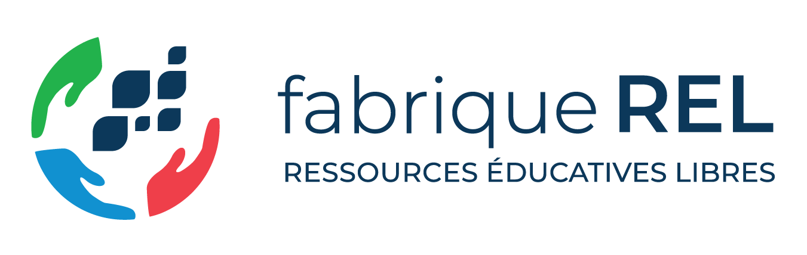
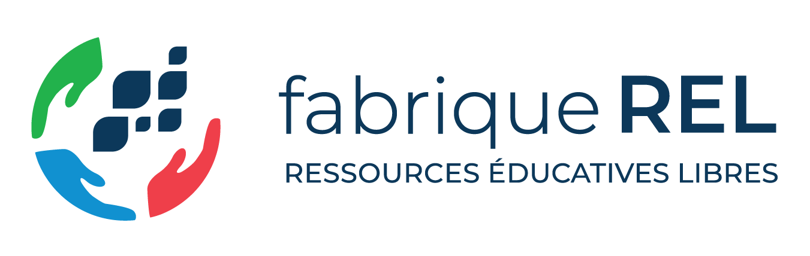

Création d’une REL avec logiciels libres
Creating an OER with Open Source Software
 

09 mars 2023
Analyse et conception de logiciels (LOG210)
Software Analysis and Design

Quarto + GitHub

Quarto.org \(\leftarrow\) R Markdown

Les « codes sources » de la REL sont dans les fichiers Markdown sur un dépôt GitHub.
Quarto.org
Quarto simplifie la transformation. Quarto simplifies the transformation.

Inteface de commande en ligne : Command-line interface :
quarto render --to html (pdf/epub/docx/pptx/etc.)
Code source diagrammes Diagram source code
```{.plantuml #fig-ddcDes caption="Diagramme de classes."}
@startuml
skinparam style strictuml
skinparam backgroundcolor transparent
class Dé {
+ face : int
brasser()
}
class JeuDeDés {
getJoueurs()
démarrerJeu(nom : string)
jouer(nom : string)
terminerJeu(nom : string)
}
class Joueur {
+ nom : string
}
JeuDeDés --> "d1" Dé
JeuDeDés --> "d2" Dé
JeuDeDés -right- "[nom]" Joueur : " "
@enduml
```
```{.graphviz #fig-tq caption="Transformations de Quarto."}
digraph mygraph {
bgcolor="transparent"; rankdir=LR
node [fontname="Helvetica Bold,Arial Bold,sans-serif"]
node [shape=note fillcolor="lightgray" style=filled height="1"];
qmd [label=".qmd"]
md [label=".md"]
node [shape=rectangle style="rounded,filled"]
quarto [fillcolor="lightblue" label="Quarto" shape=circle]
pandoc [fillcolor="pink" label="Pandoc"]
node [shape=note fillcolor="white" style=filled]; html; pdf
qmd -> quarto -> md -> pandoc
-> {html pdf "..."};
}
```
Filtre Pandoc diagram-generator.lua
kroki.io d’autres possibilités other ways to produce diagrams
Construction automatisée Automated build
GitHub + Action GitHub (script pour générer la REL avec Quarto en ligne)
« Déploiement continue Continuous deployment »

Conclusion4
La création d’une REL grâce aux logiciels libres est aussi l’occasion de contribuer à la communauté de logiciels libres.
Creating an OER thanks to OSS is also an opportunity to give back to the open-source community.
😁
- GitHub Quarto – Issues (10), Discussions (25+)

Notes de bas de page
objectives (CC BY) par Creative Mania de Noun Project
open source software (CC BY) par Ralf Schmitzer de Noun Project
technical (CC BY) par Eucalyp de Noun Project
volunteering (CC BY) par Rusmaniah de Noun Project